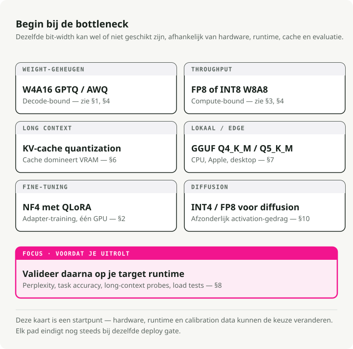
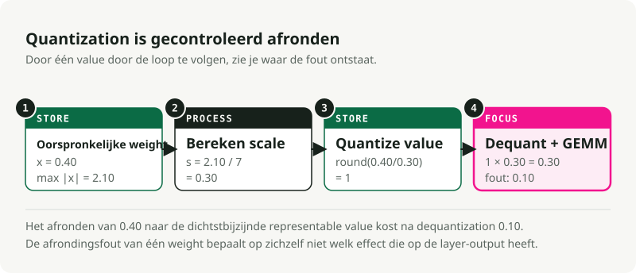
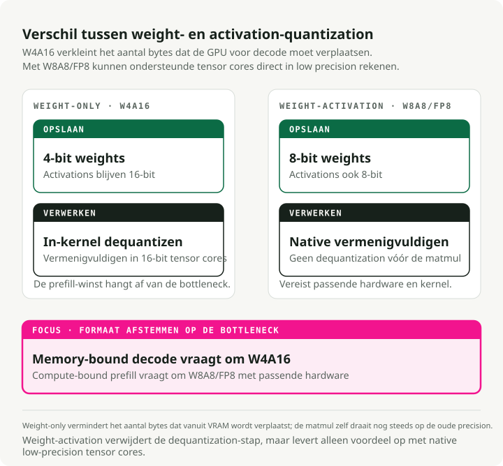
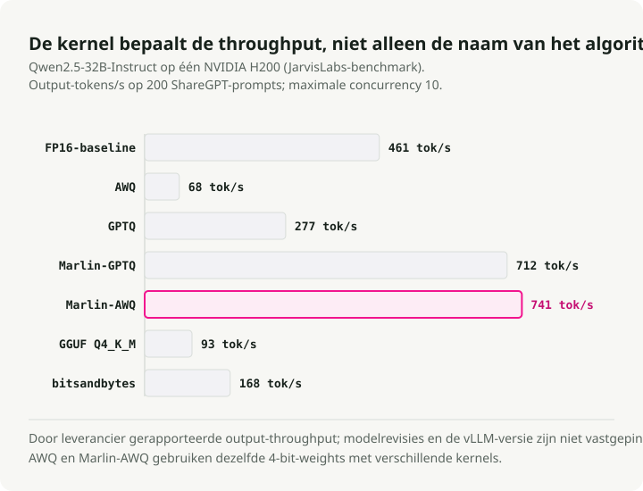
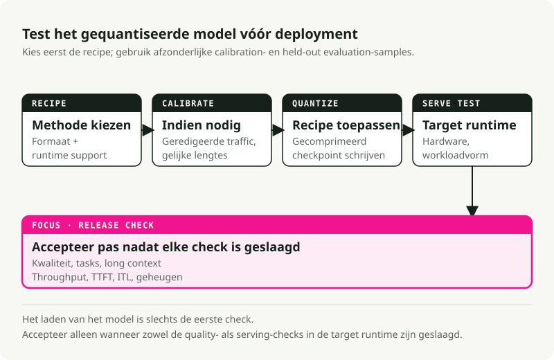

Automatische vertaling
Dit artikel is automatisch vertaald vanuit de oorspronkelijke Engelse versie.
Modellkwantisatie in 2026: van fundamenten tot productiegebruik
Kwantisatie is zelden een enkele knop die je indrukt om minder bits te gebruiken en geheugen te besparen; zelfs de basisdefinitie hangt af van het feit of je aan het comprimeren bent gewichten, activaties, of beide。 gewichtsgeheugen, activatieberekening, grootte van de KV-cache, runtime-kernen, hardwareondersteuning, kalibratiedata en kwaliteit. Een 4-bits model past wel mogelijk in de VRAM, maar werkt traag als de kernel slecht geoptimaliseerd is, aangezien de JarvisLabs vLLM-benchmark toont wanneer de algoritme en kernel verschillen. FP8 presteert uitstekend op NVIDIA Hopper GPU’s wanneer de runtime en het hardware dit ondersteunen, maar is nutteloos op hardware zonder native FP8-tensorcore-paden; TensorRT-LLM’s matrix voor hardwareondersteuning maakt die afhankelijkheid expliciet. Quantisatie van de KV-cache Dit kan belangrijker zijn dan gewichtsquantisatie bij het omgaan met lange contexten en hoge paralleliteit; het verandert het numerieke formaat dat wordt gebruikt om de opgeslagen key/value-tensors te bewaren en te lezen.
Kort samengevat: Kies eerst het bottleneck voordat je de bitbreedte kiest. Gebruik AWQ of GPTQ wanneer de gewichten niet in de VRAM passen. Gebruik FP8 W8A8 wanneer je workloads met hoge doorvoer op GPUs met FP8-ondersteuning uitvoert. Test Quantisatie van de KV-cacheWanneer een lange context of hoge paralleliteit het geheugen opvreet. Gebruik GGUF-bestanden met tensorcoderingen van llama.cpp zoals Q4_K_M, Q5_K_M of Q8_0 voor lokale CPU, Apple Silicon en desktop-inferentie. Houd dit in gedachten NF4Voornamelijk bedoeld voor fine-tuning in de QLoRA-stijl, en niet als standaard format voor productiegebruik.**

1. Begin met de bottleneck
De relevante vraag is niet “Hoeveel bits kan ik verwijderen?”, maar “Wat beperkt deze werklast op dit moment?”
Vaak voorkomende bottlenecken en hun oorsprongspunten:
| Als dit het probleem is | Begin hier | Typische hulpmiddelen | Controleer voordat u het implementeert |
|---|---|---|---|
| De gewichten van het model passen niet in de VRAM. | Quantisatie uitsluitend op basis van gewicht voor W4A16 | AWQ of GPTQ met llm-compressor of GPTQModel |
Perplexiteit, programmeren, redeneren, instructies opvolgen |
| High-throughput serving wordt beperkt door de rekenkracht. | FP8 of INT8 W8A8 | FP8 PTQ, SmoothQuant, TensorRT-LLM, vLLM | Doorvoer, TTFT, taaknauwkeurigheid |
| Een lange context of hoge paralleliteit vult de GPU vol. | Quantisatie van de KV-cache | vLLM, TensorRT-LLM, of Transformers QuantizedCache | Langdurige contextopvraging, vertraging, veiligheid en kwaliteit |
| Lokale inferentie op de CPU, Apple Silicon of desktopcomputer | GGUF-bestanden met lokale tensorcoderingen | llama.cpp, Ollama, LM Studio |
Vertraging van de prompt, RAM-verbruik, geselecteerde tensorcodering en subjectieve kwaliteit van de uitvoer |
| Het fine-tunen van de adapter moet op één GPU passen. | NF4 / QLoRA | bitsandbytes, peft |
Verlies bij fine-tuning en kwaliteit van het gefuseerde model |
| De pipeline voor afbeeldingsgeneratie is te groot of te traag. | DIFFUSIE-SPECIFIEKE INT4 OF FP8 | SVDQuant, Nunchaku, torchao, NVIDIA ModelOpt |
Visuele artefacten, prompt-alignering, vertraging, VRAM |
Gebruik deze tabel als kaart. De onderstaande paragrafen leggen uit waarom die uitgangspunten verschillen.
Enkele termen voordat we over de wiskunde gaan
- W{x}A{y} geeft aan welke precisie wordt ondersteund voor gewichts- en activatieberekeningen, meestal de GEMM-paden in serveringsmachines. W4A16 slaat gewichten op in 4-bitsvorm en houdt activaties bij in 16-bitsprecisie. W8A8 maakt gebruik van 8-bitsgewichten en -activaties in de ondersteunde rekenpaden, maar definieert niet automatisch het datatype voor de permanente opslag van elke runtime-tensor.FP8, INT8, INT4, NF4** zijn numerieke formaten. Zij bepalen welke waarden kunnen worden weergegeven.
- GPTQ, AWQ, SmoothQuant, QuaRot zijn algoritmen. Zij bepalen hoe een getraind model kan worden omgezet naar een format met lagere precisie.
- GGUF is een bestandsvorm, geen kwantificatiealgoritme. Het slaat tensors op, samen met metadata voor GGML en
llama.cpp-runtimes met een specifiek -style. Een GGUF-bestand kan onkwantificeerde tensortypen bevatten, zoalsF16,BF16, ofF32, of gecomprimeerde tensorcoderingen en vooraf ingestelde opties zoalsQ4_K_M,Q5_K_M,Q8_0,IQ*,TQ*, ofMXFP4. Lees het niet.GGUFals een CUDA-achtig FP8 W8A8-serveringsformule. - KV-cache is de attention-cache die tijdens generatie wordt gebruikt. Hierin worden eerdere sleutels en waarden opgeslagen, zodat het model niet bij elk token de hele conversatie opnieuw moet berekenen.
- Quantisatie van de KV-cache slaat gecacheerde sleutel/waarde-activatie-tensors op in een cacheformaat met lagere precisie, zoals FP8, INT8, INT4 of INT2, afhankelijk van de ondersteuning tijdens uitvoering. Dit verschilt van prefixcaching, PagedAttention, of afhandelen via offloading, waardoor wordt bepaald of cache-entries opnieuw worden gebruikt, hoe ze worden toegewezen of waar ze zich bevinden.
- GEMM staat voor general matrix multiply. Het grootste deel van de rekentijd bij het interpreteren van transformers wordt besteed aan matrixvermenigvuldiging.
2. Quantisatie wordt geregeld door ronding
Quantisatie zet hoge-precisiewaarden om in een kleiner aantal representeerbare waarden, wat de kerndefinitie is die door beide methoden wordt gebruikt. Hugging Face Optimum en TensorRT-LLM. Hierdoor bespaar je geheugen en bandbreedte. Er ontstaat echter ook een afrondingsfout.
Het kwantiseren van BF16 naar INT4 beperkt de beschikbare waarden tot slechts 16 discrete buckets, en dat is ook de reden waarom artikelen over lage bitdieptes zoals GPTQ, AWQ, en SVDQuant Besteed zoveel inspanning aan uitschieters en reconstructieringenfouten. Als deze categorieën de gewichtsverdeling van het model nauwkeurig weergeven, bespaar je geheugen zonder dat de functionaliteiten verminderen. Als het kwantisatienetwerk een belangrijke uitschieterkanaal vernietigt, verliest het model zijn vermogen om te redeneren, instructies op te volgen of visuele nauwkeurigheid te behouden.
Symmetrische en asymmetrische mappings
In navolging van de affiene mappings die worden gebruikt in gangbare Guides voor kwantisatie, kwantisatie koppelt een continue float-waarde \(x \in [\beta, \alpha]\) aan een discrete raster.
- \(x\) is de oorspronkelijke waarde met hoge precisie.
- \(x_q\) is de gekwantiseerde waarde.
- \(s\) is de schaal, oftewel de stapgrootte.
- \(z\) is het nulpunt, de gehele getallige positie die dit vertegenwoordigt
0.0. - \([q_{\min}, q_{\max}]\) is het gewenste gehelegetalbereik. Gekende 4-bitswaarden maken vaak gebruik van \([-7, 7]\).
Symmetrische kwantisatie centreert het raster rond nul en stelt \(z = 0\) in:
Dit is hardwarevriendelijk omdat wiskundige berekeningen tijdens uitvoering geen afzettingswaarde van nul hoeven te verwerken; de quantisatiestack van PyTorch maakt deze keuzes met betrekking tot de affiene schaal en de nulpuntwaarde beschikbaar als primitieve quantisatieparameters. torchao.
Asymmetrische kwantisatie verschuift het raster zodat het afwijkende bereiken bedekt:
Een verschoven raster kan positieve activaties beter behouden, maar de afwijking vereist extra rekenwerk tenzij de kernel dit effectief kan verwerken.

De granulariteit van de schaal is belangrijk
De schaalfactor kan een hele gewichtstensor, één kanaal of een kleine groep waarden omvatten; vLLM's documentatie over de FP8 KV-cache Gebruik dezelfde onderscheiding tussen de schaalstrategieën per tensor en per attention-head. Kleinere groepen behouden doorgaans de kwaliteit beter, maar ze vereisen het opslaan van meer schaalmetadata.
- Schaalvergroting per tensor: Er wordt één schaalfactor gebruikt voor de hele gewichtsmatrix. Dit is rekenkundig eenvoudig, maar één uitzonderlijke waarde in de matrix kan het gehele geheel vervormen, waardoor de precisie van alle overige gewichten in die laag verloren gaat.
- Schaalvergroting per kanaal: Er wordt een aparte schaalfactor toegewezen aan elke rij (uitvoerkanaal) van de gewichtsmatrix. Omdat verschillende uitvoerneuronen verschillende numerieke bereiken hebben, voorkomt het toekennen van een eigen schaal aan elk kanaal dat smalle bereiken hun precisie verliezen ten gunste van bredere kanalen. Dit is de standaardinstelling voor veel toepassingen. Quantisatie van gewichten in 8 bit paden.
- Schaling per groep (bloksgewijs): Elke rij van de gewichtsmatrix wordt opgedeeld in kleinere, opeenvolgende blokken – meestal 64 of 128 elementen – en aan elk blok wordt een schaalfactor toegewezen. Dit is de ideale aanpak voor 4-bits gewichtsvormaten, omdat extreme uitzonderlijke gewichten zo worden geïsoleerd in een zeer kleine lokale groep (bijvoorbeeld zoals beschreven in de AutoGPTQ-documentatie).
group_size=128in zijn Voorbeelden van GPTQ), waardoor de nauwkeurigheid van de overige gewichten van de laag behouden blijft.
Gewichten zijn statisch, dus hun schalen kunnen offline worden berekend voordat het model wordt geladen. Activaties veranderen bij elk token, waardoor hun bereiken onvoorspelbaar zijn. Dit leidt tot twee mogelijkheden voor het verwerken van activaties:
- Schaling van statische activatie berekent de activatie-schaal offline met behulp van een kalibratiedataset en programmeert deze schalen vervolgens vast in het model. Tijdens het uitvoeren gebruikt het model deze vaste schalen zonder extra wiskundige bewerkingen. Dit is snel, maar het werkt alleen als uw kalibratiedata perfect overeenkomen met de invoerlengtes en -verdelingen die u in productie tegenkomt. Als een productieprompt een activatiepiek oplevert die buiten het gecalibreerde bereik valt, knipt het model deze af, waardoor de uitvoer beschadigd raakt.Dynamische schaling van activatie berekent de schaal voor de activaties dynamisch tijdens de forward pass, waarbij wordt gekeken naar de daadwerkelijke tokenwaarden op dat exacte moment. Het kan promptvariaties perfect verwerken en onverwachte pieken in de activaties detecteren, maar het berekenen van het minimum en maximum van de activatietensor op elke laag zorgt voor extra rekenlast en vereist gespecialiseerde, geoptimaliseerde kernels om snel te werken.
The KV-cache ligt tussen die gevallen in. Sleutels en waarden zijn runtime-activatie-tensors: elke laag berekent ze op basis van de verborgen toestanden tijdens de forward pass. Zodra ze echter zijn gegenereerd, houden ze op transitorische matmul-intermediairen te zijn en worden ze permanente service-toestanden die door attention worden gelezen voor latere tokens. Een service-engine kan die toestanden op lagere precisie opslaan en schaal-metadata ernaast bewaren, zoals hier getoond. vLLM’s gecomprimeerde KV-cache, FP8 KV-cache van TensorRT-LLM, en Transformers QuantizedCache. Die keuze voor cache-opslag staat los van de activatieprecisie die wordt gebruikt binnen de lineaire kernels, waardoor “KV-cache kwantisatie” een geldig begrip is, maar niet als synoniem mag worden gebruikt voor elke optimalisatie van de KV-cache.
PTQ en QAT vinden op verschillende stappen plaats
Kwantisatie na training, of PTQComprimeert een getraind model achteraf. Trainen met quantisatierecognitie, of QAT, zorgt ervoor dat het model tijdens het trainen wordt blootgesteld aan kwantisatienoising, zodat het zich kan aanpassen.**
| Methode | Wanneer bereiken worden geleerd | Gebruik het wanneer | De kosten die u betaalt |
|---|---|---|---|
| PTQ alleen op basis van gewicht | Offline, voor statische gewichten | Het model past niet of de decodering wordt beperkt door de bandbreedte. | De activaties worden nog steeds uitgevoerd in 16-bits. |
| Statische PTQ | Offline, uit kalibratieopdrachten | Je wilt een snelle W8A8-weergave. | De kalibratiedata moeten overeenkomen met de productiegegevens. |
| Dynamische PTQ | Uitvoeringsduur, per batch of activatiepad | De invoerverdelingen verschillen sterk. | Extra uitvoeringswerk en beperkte hardwareondersteuning |
| QAT | Tijdens het trainen | PTQ beschadigt de kwaliteit van een gevoelige model. | Volledige trainingsinfrastructuur en nog veel meer rekenkracht |
De kalibratiedata moeten lijken op het verkeer dat u gaat verwerken; de kalibratiemethode voor de KV-cache van vLLM maakt bijvoorbeeld gebruik van een zorgvuldig geselecteerd dataset. llm-compressor. Als de productieprompts lange RAG-traces bevatten, zullen korte Wikipedia-paragraphen wel fraaie benchmarkcijfers opleveren, maar leiden ze tot een mislukte implementatie. Het model zal zijn activatieschaal afstemmen op korte teksten, waarna het bij echte prompts met een lange context tot andere activatiepatronen komt – een risico dat ook zichtbaar is in Evaluaties van quantisatie voor lange contexten.
3. Getalformaten bepalen de hardwarevereisten
Het getalformat bepaalt welke waarden het model in geheugen kan weergeven, maar het opslaan van een format betekent nog niet dat uw GPU hiermee efficiënt kan rekenen. Snelle uitvoering vereist runtime-kernen en hardwareondersteuning voor die specifieke bitbreedte en het format; de TensorRT-LLM-documentatie beschrijft beide aspecten. Lijst met recepten en matrix voor hardwareondersteuning.
| Formaat | Opslag per waarde | Goede standaardwaarde voor | Hoofdpunt van observatie |
|---|---|---|---|
| BF16 / FP16 | 2 bytes | Baseline-inferentie en trainingscompatibele weergave | Hoge VRAM-verbruik en hoge geheugenbandbreedte-intensiteit |
| FP8 | 1 byte | Hoge-throughput W8A8-diensten op Ada, Hopper en Blackwell | Er is behoefte aan geïntegreerde FP8-tensorcoren en runtime-ondersteuning. |
| INT8 | 1 byte | W8A8 in gebruik op oudere of niet-NVIDIA-hardware | Activatie-uitschieters en gevoeligheid van de statische kalibratie |
| INT4 | 0,5 byte | W4A16 wanneer het gewichtsgeheugen de belangrijkste beperking is | Kwaliteitsverlies bij kleinere of complexere modellen |
| FP4 / NVFP4 | ~0,5 byte | Experimenten uit de Blackwell-periode en vroege leveringspaden | Hardware-specifieke vereisten voor de compiler en de runtime |
| llama.cpp GGUF-encodingen / -presets | Variabele | Lokale CPU, Apple Silicon, desktop en edge-inferentie | GGUF is de container; de tensorencodering is de gekozen methode voor kwantisatie. |
| NF4 | 0,5 byte | Training van de QLoRA-adapter | Meestal wordt het verkeerde exportformaat gebruikt voor productiegebruik. |
BF16 en FP16 maken beide gebruik van 16 bit, maar ze verdelen de precisie op een andere manier, waardoor er verschillende foutmodi ontstaan. BF16 behoudt het 8-bits exponentbereik van FP32 en is moeilijker om te overschrijden. FP16 heeft meer mantissabits, maar een smaller exponentbereik; daarom vereisen activatiepieken meer zorg; de evaluatie van Kurtic et al. maakt expliciet gebruik van BF16 als basisreferentie bij het vergelijken van de serveringsformaten FP8, INT8 en INT4.
FP8 kent twee veelgebruikte varianten. E4M3 biedt meer precisie en wordt meestal gebruikt voor forward-weights en activaties. E5M2 biedt een groter dynamisch bereik en is nuttiger voor gradients of instabiele activatiepaden; vLLM maakt beide beschikbaar. FP8 E4M3 en E5M2 KV-cache datatypeen. In het ACL 2025-onderzoek van Kurtic et al., “Give Me BF16 or Give Me Death,” FP8 W8A8 was in feite verliesvrij. Bij de Llama-3.1-familie zijn er meer dan 500.000 evaluaties uitgevoerd. Dat betekent echter niet dat elke implementatie in FP8 automatisch succesvol is. Het betekent wel dat dit formaat zeer effectief is wanneer de serverstack het op de juiste manier gebruikt.
Blackwell voegt microscaleringsformaten toe zoals MXFP8 en NVFP4. In plaats van één schaal voor een hele tensor of rij, maakt microscalering gebruik van kleine blokken. Uitleg over NVIDIA’s NVFP4 beschrijft 4-bits floating-point waarden in blokken van 16, met FP8-schaalfactoren en een hoger niveau van FP32-schaal. Deze aanpak is bedoeld om een footprint te bieden die vergelijkbaar is met INT4, maar met floating-point gedrag. Echter, dit vereist een aangepaste hardwarearchitectuur, compiler en runtime-ondersteuning, en dat is ook de reden waarom TensorRT-LLM dit opnoemt FP4- en FP8-ondersteuning per generatie GPU’s.
4. Quantisatie alleen van gewichten versus gewicht-activatie quantisatie
De notatie WxAy geeft de precisie van gewichten en activaties weer, waardoor de GPU tijdens inferentie op verschillende manieren onder druk komt te staan.

Tijdens prefill verwerkt het model de invoerprompt. Deze fase is meestal beperkt door rekenkracht, omdat de GPU grote matrixvermenigvuldigingen uitvoert, en dat is ook de reden waarom W8A8 FP8/INT8 specificaties van belang voor een op doorvoersnelheid gerichte servering.
Tijdens decode genereert het model één token per keer. Deze fase wordt vaak beperkt door de geheugenbandbreedte, omdat de GPU voortdurend gewichten uit de VRAM laadt om het volgende token te genereren; artikelen die uitsluitend gaan over gewichten, zoals GPTQ en AWQ Streef die druk na door het aantal byte’s te verminderen.W4A16 comprimeert de gewichten en houdt de activaties in BF16 of FP16. De GPU laadt minder bytes met gewichten op, waarna deze weer worden gedecompileerd naar een vorm met hogere precisie voor de vermenigvuldiging. Dit helpt bij problemen met decoderen en het passen in het geheugen. Het versnelt de rekenintensieve prefill niet op magische wijze, omdat de daadwerkelijke matrixrekeningen nog steeds in 16 bits worden uitgevoerd.
W8A8 comprimeert de gewichten en de activatie-tensors die worden gebruikt door ondersteunde matmul-kernen. Als de hardware geavanceerde tensorcores met lage precisie heeft, kan de serverengine matrixrekeningen rechtstreeks in FP8 of INT8 uitvoeren. Daarom kan FP8 bijdragen aan een hoge doorvoersnelheid: het vermindert het geheugenverkeer en maakt gebruik van snelere rekenmethoden. Dit betekent echter niet automatisch dat de KV-cache in hetzelfde 8-bitsformaat wordt opgeslagen; controleer dit bij de runtime. ** typen van de cache of implementatie van een cache los van elkaar.
Als het model nauwelijks in de VRAM past, begin dan met kwantisatie op basis van gewicht alleen om het geheugenverbruik te verminderen. Als het model past maar moeite heeft met de doorvoersnelheid bij hoge batchbelastingen, moet u dit evalueren FP8 of INT8 W8A8 om de rekenfase te versnellen. Als geheugenproblemen alleen optreden tijdens lange gesprekken, schat eerst de KV-cache-term in. Als deze de overhand heeft, voer een test uit Quantisatie van de KV-cache in plaats van de gewichten verder te comprimeren; als herhaalde prefixen domineren, activeer dit prefixcaching in plaats daarvan.
5. Algoritmen versus runtime-kernen
Quantisatiealgoritmen (zoals GPTQ of AWQ) Definieer hoe de gewichten van het model worden gemapt naar een lagere precisie. Runtime-kernen (zoals Marlin of vLLM’s aangepaste kernels) zijn de lage-niveau GPU-code die de matrixvermenigvuldiging uitvoert. Een sterk gecomprimeerd model zal alleen snel draaien als er een geoptimaliseerde kernel beschikbaar is voor diens specifieke kwantisatievorm.

De vLLM-benchmark van JarvisLabs Op Qwen2.5-32B-Instruct met een NVIDIA H200 wordt het kernel-effect zichtbaar:
| Quantisatie / kernel | Perplexiteit: hoe lager, hoe beter. | Pass@1: hoe hoger, des te beter | Doorvoer | TTFT |
|---|---|---|---|---|
| FP16-baseline | 6.56 | 56.1% | 461 tok/s | 57,7 ms |
| AWQ | 6.84 | 51.8% | 68 tok/s | 277,8 ms |
| GPTQ | 6.90 | 46.3% | 277 tok/s | 107,1 ms |
| Marlin-GPTQ | 6.97 | 45.7% | 712 tok/s | 51,9 ms |
| Marlin-AWQ | 6.84 | 51.8% | 741 tok/s | 73,5 ms |
| GGUF Q4_K_M | 6.74 | 51.8% | 93 tokens per seconde | 958,0 ms |
| bitsandbytes | 6.67 | 51.8% | 168 tok/s | 135,3 ms |
Kopieer deze cijfers niet naar je eigen stack. Ze zijn afkomstig van één model, één GPU-klasse en één softwareconfiguratie. Ze geven slechts een beperkt beeld: de naam van het algoritme in de checkpoint vertelt je namelijk niet hoe snel de dienstverlening zal verlopen.
Bijvoorbeeld, AWQ En zowel Marlin-AWQ als de andere variant gebruiken dezelfde 4-bits gewichten. De Marlin De implementatie is aanzienlijk sneller omdat de CUDA-kernel de dekwantificatie en matrixvermenigvuldiging samenvoegt tot één sterk geoptimaliseerde GPU-operatie.
Voer een benchmark uit op de baseline en de gecomprimeerde varianten onder dezelfde promptmix, met behulp van hetzelfde hulpmiddel, bijvoorbeeld vllm bench serve:
vllm bench serve \
--model ./outputs/Qwen2.5-32B-Instruct-AWQ-W4A16 \
--dataset-name sharegpt \
--num-prompts 200 \
--input-len 1024 \
--output-len 256
Houd de doorvoersnelheid, TTFT, latentie tussen tokens, geheugenverbruik en taakkwaliteit in de gaten. Als een van deze waarden zich in tegenovergestelde richting ontwikkelt, doet de benchmark zijn werk goed.
Het algoritme-menu
Gebruik deze tabel als een kaart, en niet als een ranglijst:
| Algoritme | Gewone format | Wat het probeert te behouden | Hoofdkosten |
|---|---|---|---|
| GPTQ | W4A16 | Laagsgewijze reconstructie met behulp van Hessian-schattingen | Trage kalibratie en complexere verwerking |
| AWQ | W4A16 / W4A8 | Belangrijke activatiekanalen | Behoeft kalibratie en gefuseerde serveringskernen |
| SmoothQuant | W8A8 | INT8-activatiegedrag door de schaal van uitschieters over te brengen naar de gewichten | Schalingstuning per model |
| QuaRot / SpinQuant | W4A4 / W4A8 | Verlaag de druk van activeringsuitval door rotaties | Complexiteit van runtime-rotatie |
| HQQ | W4A16 / W2A16 | Snel compressie uitsluitend op basis van gewichten, zonder kalibratie | Kwaliteit vereist downstream-controles bij zeer lage bitbreedtes. |
| QLoRA (NF4) | Geheugen voor adaptertraining | Niet de beste standaardoptie voor het serveren | |
| llama.cpp GGUF K-quants en IQ-quants | Gemengde coderingen van tensors met weinig bits | Kwaliteit van lokale inferentie per byte | Niet ontworpen voor cloud-batchverwerking |
De toolchain ontwikkelt zich actief. AutoGPTQ werd Gearchiveerd in april 2025, en AutoAWQ was Gearchiveerd en officieel afgekeurd in mei 2025. Voor nieuw werk, begin met llm-compressor voor compressed-tensors controlepunten die worden verbruikt door vLLM, of GPTQModel wanneer je de actieve GPTQ-path met Marlin nodig hebt, machete, MoE-memoryopties en schijfafhandeling.
Er is één grens die getrokken moet worden voordat men het algoritme-menu verlaat: pruning en distillatie verminderen eveneens de kosten voor het serveren, maar dit zijn geen kwantisatiemethoden. 2:4 gestructureerde sporiteit verwijdert gewichten volgens een patroon dat door de NVIDIA sparse tensor cores kan worden gebruikt. DistillatieEr wordt een kleinere ‘studentmodel’ getraind om een groter model na te bootsen, wat goed werkt voor specifieke taken. Beide benaderingen vereisen hun eigen trainings- of optimalisatieproces, dus voeg ze niet zomaar toe aan de lijst met mogelijkheden voor kwantisatie tenzij je daadwerkelijk van plan bent dit extra werk uit te voeren.**
6. De dienstgedeelte-geheugennodigheid omvat meer dan alleen de gewichten
Bij het plannen van de hardwarevereisten moet je bedenken dat het gecomprimeerde checkpoint slechts een deel is van het totale geheugenverbruik. Beschouw dit niet als een tweede optie voor kwantisatie. Zie het eerder als een controle om vast te stellen of kwantisatie van de gewichten voldoende is; PagedAttention Hij beschouwde de KV-cache als een belangrijke component van het servergeheugen, en niet als een onbelangrijk implementatie-detail.
Offline-kwantisatie kan per laag worden beperkt. Hulpmiddelen zoals llm-compressor Men kan een transformer-blok laden, de kalibratie- en kwantificatieroutes uitvoeren, het gecomprimeerde blok opslaan en verdergaan. Hierdoor blijft het maximale GPU-geheugenbehoefte beperkt tot de grootste actieve laag plus de kalibratiebuffers. Er is nog steeds CPU-RAM en schijfruimte nodig voor het oorspronkelijke checkpoint, maar de GPU hoeft niet altijd het volledige BF16-model in geheugen te houden.
Het maximale GPU-geheugen tijdens offline kwantificatie ziet er ongeveer zo uit:
Bij het serveren zijn de eisen strenger. Het hele gecomprimeerde checkpoint moet permanent aanwezig blijven in de KV-cache en de runtimebuffers. De KV-cache groeit naarmate de contextlengte en de grootte van de actieve batch toenemen.$$ \text{KV-cache (bytes)} = 2 \times L \times H_{\text{kv}} \times D \times S_{\text{ctx}} \times B_{\text{batch}} \times \text{BytesPerValue} $$
Waarbij:
- \(L\) de aantal lagen is.
- \(H_{\text{kv}}\) het aantal key-value attention-heads is. Atentie voor gegroepeerde queries vermindert dit door meerdere query-heads te laten delen in minder KV-heads.
- \(D\) is de dimensie van elke head, meestal 128 of 256.
- \(S_{\text{ctx}}\) is het aantal prompt-tokens plus het aantal gegenereerde tokens.
- \(B_{\text{batch}}\) is de actieve batch voor het serveren.
- \(\text{BytesPerValue}\) is 2 voor BF16 of FP16 en 1 voor FP8 of INT8; bij vLLM’s FP8 KV-cache-modus is het voorbeeld van de serving-stack dat in dit artikel wordt gebruikt.
KV-cache kwantisatie bestaat echt, maar staat los van cache-reuse
Ja, de KV-cache kan tijdens inferentie worden gequantiseerd. Elke decode-stap genereert K- en V-activatietensors voor het nieuwe token. Een W8A8-model maakt mogelijk al gebruik van FP8 of INT8 voor de ondersteunde projectiemathematica, maar de cache is een apart opslagobject: veel serveringssystemen bewaren deze in de model/cache-dtype, tenzij u dit uitgeschakeld hebt. KV-cache datatype, gebruik een checkpoint met schaalbare cache, of kies er eentje Implementatie van een gequantiseerde cache. Wanneer de kwantisatie van de KV-cache is geactiveerd, schrijft de engine de cache-entries op als een representatie met lagere precisie, samen met schaalfactoren. Latere attention-operaties lezen deze cache met lagere precisie en kwantiseren deze ofwel binnen de attention-kernel, of voeren ze bij sommige backends delen van de attention uit in het gekwantiseerde domein.
vLLM’s documentatie over de stabiele gequantiseerde KV-cache dit rechtstreeks exposeren met kv_cache_dtype="fp8" of --kv-cache-dtype fp8. vLLM ondersteunt de FP8 E4M3 en E5M2 cacheformaten, schaalstrategieën per tensor en per attention-head, en drie schaalgangen: standaardschaalverhoudingen, schatting van de schaal tijdens het warmup-proces, en kalibratie van het dataset llm-compressor. Met FlashAttention 3vLLM kan ook attentie-operaties uitvoeren in het FP8-domein door niet alleen de sleutels en waarden, maar ook de queries te kwantificeren.
TensorRT-LLM exposeert de FP8 KV-cache via KvCacheConfig(dtype='fp8') En de FP8 KV-cache en NVFP4 KV-cache worden als aparte kwantisatieregels beschouwd, los van de kwantisatie van gewichten en activaties. Hugging Face Transformers heeft ook een QuantizedCache pad via cache_implementation="quantized", met hqq ondersteuning voor cacheformaten int2, int4 en int8 en quanto Ondersteuning voor int2 en int4.
Desondanks is de kwantisatie van de KV-cache niet hetzelfde als gewone KV-caching. Gewone KV-caching slaat eerdere sleutels en waarden op om deze niet opnieuw te hoeven berekenen. Prefixcaching Hergebruikt cache-blokken voor aanvragen met hetzelfde prefix. PagedAttention Vermindert fragmentatie en verbetert de toewijzing van geheugenruimte. KV-offloading verplaatst cacheblokken tussen verschillende geheugenlagen. Dit zijn technieken voor cachebeheer; ze kunnen worden gecombineerd met quantisatie, maar vormen zelf geen vorm van quantisatie.
Het kwaliteitsrisico verschilt ook van PTQ dat alleen rekening houdt met gewichten. KV-cache-quantisatie zorgt voor fouten in de aandachtstoestand die bij elke volgende decode-stap wordt gelezen, waardoor aparte tests nodig zijn voor het ophalen van lange contexten, meerdere conversatieturns, veiligheids-/weigeringsgedrag, formatering van toolgebruik en uitvoerlatentie. KVQuant, KIVI, en de vLLM FP8 KV-cache onderzoek Iedereen beschouwt de kwantisatie van de KV-cache als een apart probleem.
Voor een 70B-model dat een context van 32k ondersteunt, kan de KV-cache groter zijn dan de gewichtsbesparing die wordt behaald door nog een ronde compressie van de gewichten. In dit geval is het raadzaam om te testen Quantisatie van de FP8 KV-cache is nuttiger dan het dwingen van de gewichten in een kleinere vormaat.
7. Hardware beperkt het aanbod
De geheugennodigheid voor gewichten kan gemakkelijk worden geschat op basis van het aantal parameters en de opslagprecisie, volgens hetzelfde schaalprincipe dat wordt gebruikt in Discussies over het serviceramen geheugen met betrekking tot de KV-cache:
| Grootte van het model | BF16-gewichten | FP8 / INT8 gewichten | INT4-gewichten |
|---|---|---|---|
| 7B / 8B | ~14-16 GB | ~7-8 GB | ~3,5–4 GB |
| 14B | ~28 GB | ~14 GB | ~7 GB |
| 32B / 34B | ~64-68 GB | ~32-34 GB | ~16-17 GB |
| 70B | ~140 GB | ~70 GB | ~35 GB |
| 109B MoE | Ongeveer 218 GB in totaal | ~109 GB | ~55 GB |
Mixture-of-experts-modellen kunnen per token minder parameters activeren, maar de volledige set aan gewichten moet toch ergens opgeslagen blijven, tenzij de uitvoeromgeving offloading ondersteunt; de matrix voor kwantisatiesupport van TensorRT-LLM behandelt MoE-modelfamilies als implementatie-doelwitten met hun eigen ondersteunde recepten.
Uw implementatier hardware beperkt welke kwantificeringsformaten haalbaar zijn:
- CPU-prestaties zijn afhankelijk van vector instructies zoals AVX-512 of AMX. Een GGUF bestand geladen via
llama.cppdit is de praktische aanpak. - Apple Silicon maakt gebruik van geunificeerde geheugen, zodat lokale modellen een groot gedeeld RAM-pool kunnen gebruiken in plaats van gespecialiseerde VRAM; GGUF en
llama.cppblijft de gebruikelijke lokale-runtime-pad omdat GGUF is ontworpen voor GGML-uitvoerders.. - NVIDIA Ampere ondersteunt INT8-tensorcore-servicepaden, maar niet de native FP8 W8A8-tensorcore-wiskunde. Veelgebruikte opties zijn kwantisatie met alleen gewichten in het formaat W4A16 of statische INT8, wat overeenkomt met Matrix voor hardwareondersteuning van TensorRT-LLM.
- NVIDIA Ada en Hopper ondersteunen FP8-leveringspaden in TensorRT-LLM. FP8 W8A8 Het testen van de prestaties op deze GPUs is zeker de moeite waard.
- NVIDIA Blackwell voegt toe NVFP4 en ondersteuning voor microscaling, maar de softwareomgeving blijft belangrijk. Beschouw vroege stacks met lage bitdiepten voor floating-point-getallen als versiespecifiek.
8. Kalibratie en evaluatie vóór implementatie
Stuur het gequantiseerde model niet op omdat het kan worden geladen. Stuur het pas op nadat het de kwaliteits- en prestatiecontroles voor uw werklast heeft doorstaan; recente evaluaties van quantisatie tonen verschillende resultaten voor LLM-serving, taken met lange context, en Modellen met veel redeneringscapaciteit.

Voor kalibratie moet je prompts gebruiken die lijken op die in de productieomgeving:
- Voeg RAG-traces, SQL-query’s, agentgeschiedenissen, codeopdrachten, payload’s van toolaanroepen en systeemprompten uit de doelwerkload toe; statische PTQ hangt af van kalibratiedata die overeenkomen met de productiedistributie. – Zorg voor overeenkomstige sequentielengtes. Korte, enkelvoudige prompts zullen geen problemen opleveren. Gedrag van activatie bij lange contexten.
- Bewaar
embed_tokensenlm_headmet een hogere precisie, mits de methode of de uitvoering dit toestaat; een veelvoorkomend uitsluitingspatroon in Recepten voor LLM-compressie. - Gebruik voldoende voorbeelden om de activeringsbereiken te stabiliseren. In de praktijk, 128 tot 512 representatieve prompts Het vormt een veelgebruikt uitgangspunt voor workflows in het kader van kalibratie. Verwijder geheime informatie en privégegevens van gebruikers voordat u productieloggen gebruikt.
Voor evaluatie moet zowel de taalkwaliteit als het prestatievermogen getest worden:
- De perplexiteit op een standaardcorpus vangt brede vormen van taaldegradatie op, maar de JarvisLabs-benchmark Het is een nuttige herinnering dat perplexiteit en doorvoer op verschillende manieren kunnen veranderen. Taakgebiedspecifieke analyses onthullen fouten die door perplexiteit worden verborgen. Gebruik dit. HumanEval voor programmeren, MMLU voor een brede kennisbasis, en AIME of MATH-500 voor wiskundig redeneren wanneer die domeinen van belang zijn.
- Formaatcontroles zijn cruciaal voor agentensystemen. Test de conformiteit met JSON-schema’s, de markdown-output, de vorm van toolaanroepen en het weigergedrag, omdat gequantificeerde modelevaluaties applicatiegerelateerde fouten kunnen overzien, zelfs wanneer De nauwkeurigheid van de aggregatierichtingstests blijft stabiel..
- Tests met lange context detecteren schade door kwantisatie van de KV-cache. De ‘naald in de hooiberg’-methode is eenvoudig, maar Resultaten van quantisatie voor lange contexten Uitleggen waarom deze controles thuishoren in de deploy-gate.
Loadtests moeten doorvoer, TTFT, latentie tussen tokens, maximale batchcapaciteit en piekgeheugen rapporteren; vLLM maakt deze gegevens beschikbaar via
vllm bench serveEvalueer modellen die veel redenering vereisen op een strenge manier. Sub-4-bit of ongerotatieerde W4A4-quantisatie kan de nauwkeurigheid van het redeneren schaden, zelfs wanneer de basale perplexiteit stabiel lijkt – dit vormt het kernwaarschuwingpunt. Studie van gequantificeerde redeneringsmodellen.
9. Workflow voor het bijbehorende repository
Het bijbehorende repository. slavadubrov/demo-modelcompressie, is bedoeld om het besluitvormingsproces reproduceerbaar te maken. Het maakt gebruik van uv en richt zich op planning, recepten, proefruns en benchmarkconfiguraties die zijn gebaseerd op dezelfde bronnen als hier gebruikt: vLLM, LLM-compressor, TensorRT-LLM, en de algoritmapapers.
Kloon het en onderzoek de ondersteunde algoritmen:
git clone https://github.com/slavadubrov/model-compression-demo.git
cd model-compression-demo
uv run python demo.py list-algorithms
Begin met plannen en het bepalen van de omvang:
uv run python demo.py plan \
--model-preset llama3-8b \
--goal fit-memory \
--hardware ampere \
--context 4096 \
--concurrency 4
uv run python demo.py estimate \
--model-preset llama3-8b \
--scheme w4a16 \
--context 8192 \
--concurrency 8
Genereer vervolgens het recept en voer een simulatie van de kalibratie uit voordat er GPU-tijd wordt besteed:
uv run python demo.py recipe --algorithm gptq-w4a16
uv run python demo.py quantize \
--algorithm gptq-w4a16 \
--model Qwen/Qwen3-0.6B \
--calibration-file examples/representative_calibration.jsonl \
--text-column text \
--dry-run
Voor het serveren en het plannen van benchmarks:
uv run python demo.py serve-command \
--algorithm fp8-dynamic \
--fp8-kv-cache \
--enable-prefix-caching
uv run python demo.py benchmark-plan \
--model Qwen/Qwen2.5-32B-Instruct \
--algorithms gptq-w4a16,awq-w4a16,bnb-nf4,gguf-q4 \
--dataset-name sharegpt \
--num-prompts 200 \
--input-len 1024 \
--output-len 256 \
--output-json reports/quantization-benchmark-plan.json
Tot slot worden de basis- en gecomprimeerde modellen vergeleken met expliciete drempelwaarden:
uv run python demo.py quality-eval \
--base-model Qwen/Qwen3-0.6B \
--compressed-model outputs/Qwen3-0.6B-W4A16 \
--mode all \
--lm-eval-task hellaswag \
--lm-eval-limit 50 \
--max-perplexity-delta-pct 5 \
--max-task-regression 0.02 \
--output-json reports/qwen3-0.6b-w4a16-quality.json
Voer de werkzaamheden in volgorde uit: plan het doel, schat de geheugengebruik, voer een simulatie uit van het proces, meet de prestaties bij het serveren, en vergelijk daarna de kwaliteit met de vastgestelde drempels. Die volgorde weerspiegelt de indeling in dit artikel tussen Grootte van het geheugen, benchmarking van de uitvoeringstijd, en kwaliteitsbeoordeling.
10. Diffusiemodellen hebben een aparte pad nodig
De kwantificatieregels voor LLM’s zijn niet eenvoudig over te zetten naar diffusie- en diffusion-transformerpipelines; SVDQuant ziet diffusiekwantisatie als een apart probleem van activatie-uitschieters in plaats van een directe kopie van de PTQ voor alleen de gewichten van LLM’s.
Autoregressieve LLM’s genereren één token per keer. Diffusiemodellen voeren herhaalde denoisestappen uit, waardoor hun activatiedistributies gedurende het proces veranderen. Het toepassen van een standaard 4-bits kwantisatiemethode voor LLM’s op een diffusiemodel bespaart vaak geheugen, maar leidt tot ernstige visuele artefacten, en dat is ook de reden waarom methodeën die zich specifiek richten op diffusiemodellen worden gebruikt. SVDQuant / Nunchaku en NVIDIA ModelOpt-diffusiekwantificatie bestaat.
Gebruik een plan op componentniveau:
- Houd de VAE in 16-bits. Kleine fouten daar kunnen leiden tot kleurbanden, ruis of een beschadigde beeldstructuur; daarom moeten diffusiewerkflows gevoelige componenten behouden, tenzij er een methode is die ze expliciet valideert.
- Quantiseer eerst de DiT of U-Net backbone, omdat deze meestal het grootste deel van de parameters bevat, wat overeenkomt met de componentniveau-anpak die wordt gebruikt door Methoden voor diffusiekwantificatie3. Behandel tekstencoderingen apart. Het kwantiseren van T5-XXL of CLIP kan de alignering van prompts en de weergave van tekst schaden; evalueer ze daarom als afzonderlijke componenten in plaats van als algemene transformer-blokken.
- Gebruik diffusiebewuste methoden zoals SVDQuant wanneer activatie-outliers het hoofdprobleem vormen.
- Evalueer met afbeeldingen, en niet met tekstmatige metrics. Controleer de naleving van de prompt, de weergave van tekst, huidtonen, kleurbalans, fijne details, vertraging en VRAM-gebruik.
Als de evaluatieset alleen bestaat uit eenvoudige of zeer veelvoorkomende prompts, zul je randgeval-fouten over het hoofd zien. Voeg moeilijke gevallen toe: kleine tekst, handen, herhaalde objecten, gestructureerde lay-outs en prompts met negatieve beperkingen, omdat fouten bij diffusiekwantisatie zich visueel manifesteren in plaats van in perplexiteit van een taalmodel.
11. Productiedefinstellingen
Voor enterprise LLM-serving, begin je met een BF16-basislijn in de specifieke serverengine die u van plan bent te gebruiken. Als doorvoer het doel is en de hardware dit ondersteunt, voer dan een test uit. FP8 W8A8. Als het model niet past, voer een test uit AWQ of GPTQ W4A16 met Kernen van de Marlin-klasse. Als een lange context of concurrentie het probleem is, voer dan tests uit Quantisatie van de FP8 KV-cache. Als herhaalde prefixen het probleem zijn, schakel deze dan ook in prefixcaching. Stuur alleen de gecomprimeerde versie wanneer zowel de kwaliteitsmetingen als de prestatiemetingen voldoen.
Voor lokaal en edge-inferentie, begin met een GGUF Gebruik een bestand met Q4_K_M of Q5_K_M. Ga over op een Q8_0 GGUF wanneer er voldoende geheugen is en kwaliteit belangrijker is dan de opslagruimte. Het gebruik van minder dan 4 bits is alleen een uiterste optie, geen standaardprocedure.
Voor fijnafstelling, gebruik NF4 met QLoRA om adapters goedkoop te trainen. Evalueer de adapter in de applicatie voordat deze wordt geïntegreerd. Na integratie, exporteer hem naar het dienstartefact dat je daadwerkelijk nodig hebt: een llama.cpp-compatibele GGUF-bestand, een AWQ/GPTQ/compressed-tensors een checkpoint, een FP8-serving checkpoint of BF16.
Voor diffusie, zorg ervoor dat de VAE veilig blijft, kwantificeer eerst de backbone en beoordeel het resultaat visueel. Tekstperplexiteit geeft je niet aan of een afbeeldingspipeline is mislukt, dus gebruik diffusie-specifieke bewijzen zoals SVDQuant en visuele evaluatie.
Belangrijkste conclusies
- Quantificering combineert gecontroleerd afgeronden getal met uitvoering tijdens runtime. Alleen de bitbreedte bepaalt noch de snelheid, noch de kwaliteit.
- Kies eerst het bottleneck: geheugenbelasting of rekenwerk voor activeringen. KV-cache, lokale uitvoeringsomgeving, geheugen voor fine-tuning of geheugen voor de afbeeldingspipeline.
- W4A16 Het is voornamelijk een optimalisatie voor geheugen en decodering. Het vermindert het gebruik van VRAM en de druk op het geheugenbandbreedte, maar versnelt geen rekenintensieve prefill-operaties. FP8 Het is een serveringshulpmiddel wanneer de hardware en kernels ondersteuning bieden voor native, lage-precisiewiskunde.
- Kernen kunnen de resultaten van benchmarks domineren. Marlin, machete, BitBLAS, vLLM, en TensorRT-LLM Paden kunnen net zo belangrijk zijn als de quantificatiealgoritme.
- GGUF is een bestandsformaat voor GGML en
llama.cppRuntimes. De keuze voor kwantisatie is de tensorencodering of een vooraf ingestelde optie binnen het GGUF-bestand. - De KV-cache is een belangrijk onderdeel van het geheugen. Lange context en gelijktijdigheid Het kan groter worden dan de gecomprimeerde gewichten.
- Quantisatie van de KV-cache bestaat en wordt ondersteund door serverstacks, maar het staat los van prefixcaching, PagedAttentionen afhandelen door een ander systeem.
- Kalibratiedata Het moet eruitzien als echte productietraffic. Algemene tekst is voldoende voor smoke tests, maar niet voor de beslissing over het implementeren. Diffusiekwantisatie Het vormt een eigen werkflow. Beoordeel de gevoeligheid van componenten en de visuele kwaliteit, en niet alleen de grootte van het model.
Referenties
- Maarten Grootendorst Visual Guide: Grootendorst, Een visuele gids voor quantisatie, 2024. Nieuwsbrief.
- JarvisLabs vLLM Benchmarks: JarvisLabs, Algemene gids en benchmarks voor vLLM quantisatie, 2026. JarvisLabs.
- Handleiding voor optimalisatie door quantisatie op Hugging Face: Hugging Face, Conceptuele handleiding over quantisatie. Documentatie.
- vLLM Quantificatie-documentatie: vLLM-project, Quantificatie. Documentatie.
- Documentatie over de gequantiseerde KV-cache van vLLM: vLLM-project, Gequantiseerde KV-cache. Documentatie.
- vLLM Benchmark Docs: vLLM-project, vllm bench serve. Documentatie.
- LLM Compressor Docs: vLLM-project, LLM Compressor. Documentatie.
- GPTQModel: ModelCloud, GPTQModel. GitHub.
- Quantisatie van TensorRT-LLM: NVIDIA, Quantisatie van TensorRT-LLM. Documentatie.
- NVIDIA NVFP4: NVIDIA, Introductie van NVFP4 voor efficiënte en nauwkeurige inferentie met lage precisie. Blog.
- Hugging Face QuantizedCache: Hugging Face, Opslagstrategieën: Gekwantiseerde cache. Documentatie.
- NVIDIA Model Optimizer: NVIDIA, Model Optimizer. GitHub.
- torchao Quantificatie: PyTorch, overzicht van torchao quantificatie. Documentatie.
- Quantisatie van bitsandbytes: Hugging Face, bitsandbytes. Documentatie.
- HQQ: Dropbox, Half-Quadratische Quantisatie. GitHub.
- PEFT: Hugging Face, Parameter-Efficiënt Fijntunen. Documentatie.
- Ollama: Lokale uitvoeromgeving voor Ollama-modellen. Website.
- LM Studio: lokale AI-runtime van LM Studio. Website.
- Status van AutoGPTQ: Repository van AutoGPTQ, gearchiveerd in april 2025. GitHub.
- Status AutoAWQ: Het AutoAWQ-repository is gearchiveerd en verouderd vanaf mei 2025. GitHub.
- GPTQ: Frantar et al., GPTQ: Precise post-training quantisatie voor generatieve, vooraf getrainde Transformers, NeurIPS 2023. arXiv:2210.17323.
- Marlin: Frantar et al., MARLIN: Gemengde precisie auto-regressieve parallelle inferentie op grote taalmodellen, arXiv:2408.11743. arXiv:2408.11743.
- AWQ: Lin et al., AWQ: Activation-aware Weight Quantization voor compressie en versnelling van LLM’s, MLSys 2024. arXiv:2306.00978.
- SmoothQuant: Xiao et al., SmoothQuant: Precise en efficiënte post-training quantisatie voor grote taalmodellen, ICML 2023. arXiv:2211.10438.
- QuaRot: Ashkboos e.a., QuaRot: Outlier-Vrije 4-Bit Inferentie in Gerooteerde LLM’s, NeurIPS 2024. arXiv:2404.00456.
- SpinQuant: Meta AI Research, SpinQuant: LLM Quantisatie met geleerde rotaties, arXiv:2405.16406. arXiv:2405.16406.
- QLoRA / NF4: Dettmers et al., QLoRA: Efficiënt fijnafstellen van gequantiseerde LLM’s, NeurIPS 2023. arXiv:2305.14314.
- SVDQuant / Nunchaku: MIT HAN Lab, SVDQuant: Het elimineren van uitschieters met lage-rangcomponenten voor 4-Bit diffusiemodellen, ICLR 2025. arXiv:2411.05007, Nunchaku.
- vLLM PagedAttention: Kwon et al., Efficiënt geheugenbeheer voor het serveren van grote taalmodellen met PagedAttention, SOSP 2023. arXiv:2309.06180.
- Grouped-Query Attention: Ainslie et al., GQA: Training Generalized Multi-Query Transformer Models from Multi-Head Checkpoints, EMNLP 2023. arXiv:2305.13245.
- vLLM FP8 KV Cache: Kubler, Kurtic, Wilkinson e.a., De staat van FP8 KV-Cache en attentiekwantisatie in vLLM, vLLM Blog, april 2026. vLLM Blog.
- KIVI: Liu et al., KIVI: Een asymmetrische 2bit-quantisatie zonder tuning voor KV-cache, ICML 2024. arXiv:2402.02750.
- KVQuant: Hooper et al., KVQuant: Naar inferentie van LLM’s met een contextlengte van 10 miljoen tokens door kwantisatie van de KV-cache, NeurIPS 2024. arXiv:2401.18079.
- Beoordeling van LLM-servicering: Kurtic et al., "Give Me BF16 or Give Me Death"? Accuracy-Performance Trade-Offs in LLM Quantization, ACL 2025. arXiv:2411.02355.
- Beoordeling van kwantisatie voor lange contexten: Mekala e.a., Beïnvloedt kwantisatie de prestaties van modellen bij taken met lange contexten?, arXiv:2505.20276. arXiv:2505.20276.
- Redeneringsevaluatie: Schadigt kwantisatie het redeneren? Een empirisch onderzoek naar gekwantiseerde redeneringsmodellen, arXiv:2504.04823. arXiv:2504.04823.
- SlideSparse: SlideSparse: Snelle en flexibele (2N-2):2N-gestructureerde sparsity, arXiv:2603.05232v1. arXiv:2603.05232v1.
- BitBLAS: Microsoft, BitBLAS. GitHub.
- HumanEval: OpenAI, HumanEval. GitHub.
- MMLU: Hendrycks et al., Measuring Massive Multitask Language Understanding. arXiv:2009.03300.
- MATH-500: Hugging Face H4, MATH-500. Dataset.
- GGUF en llama.cpp: ggml-org, het GGUF-bestandseformaat en llama.cpp. GGUF, llama.cpp.
- Hugging Face GGUF Docs: Hugging Face, GGUF. Documentatie.
- Referentierepositoorium: slavadubrov/demo-modelcompressie.